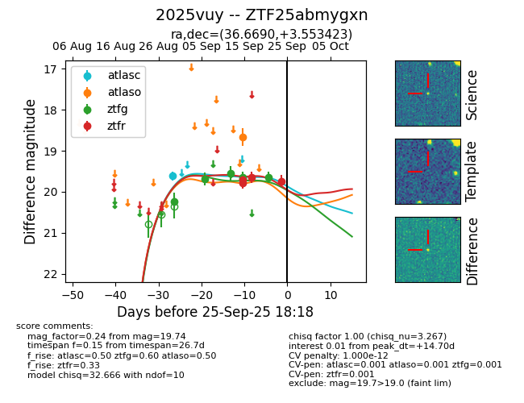
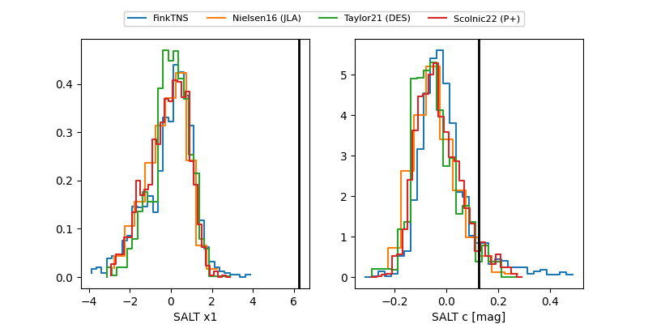

FINK: ZTF25abmygxn
Lasair: ZTF25abmygxn
ALeRCE: ZTF25abmygxn
TNS: 2025vuy
YSE: 2025vuy
ZTF25abmygxn (ztf,fink)
2025vuy (tns,yse)
equatorial (ra, dec) = (36.6690,+3.55342)
galactic (l, b) = (163.4455,-51.66673)


last atlasc=19.62, atlaso=18.67, ztfg=19.64, ztfr=19.74
1 atlasc, 1 atlaso, 6 ztfg, 4 ztfr detections